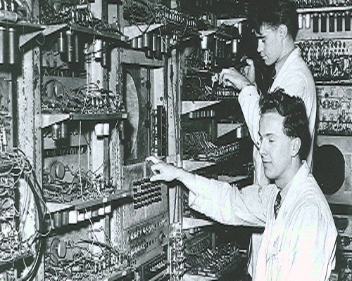
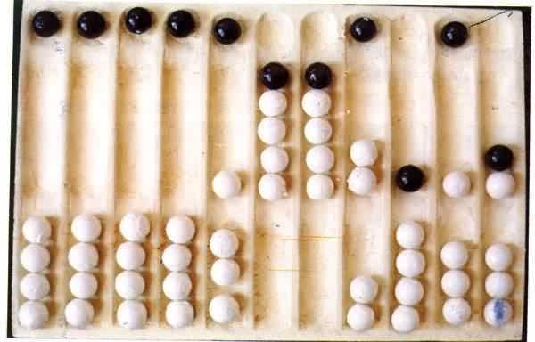
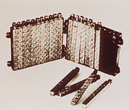
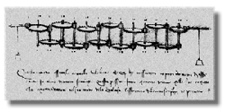
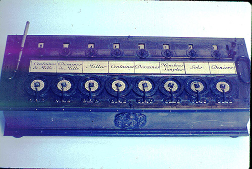

The first computers were people! That is, electronic computers
(and the earlier mechanical computers) were given this name because they
performed the work that had previously been assigned to people.
"Computer" was originally a job title: it was used to describe
those human beings (predominantly women) whose job it was to perform the
repetitive calculations required to
compute such things as navigational tables, tide charts, and planetary
positions for astronomical almanacs. Imagine you had a job where hour after
hour, day after day, you were to do nothing but compute multiplications.
Boredom would quickly set in, leading to carelessness, leading to mistakes. And
even on your best days you wouldn't be producing answers very fast. Therefore,
inventors have been searching for hundreds of years for a way to mechanize
(that is, find a mechanism that can perform) this task.

The abacus was an early aid for mathematical computations. Its only
value is that it aids the memory of the human performing the calculation. A skilled
abacus operator can work on addition and subtraction problems at the speed of a
person equipped with a hand calculator (multiplication and division are
slower). The abacus is often wrongly attributed to China. In fact, the oldest
surviving abacus was used in 300 B.C. by the Babylonians. The abacus is still
in use today, principally in the far east. A modern abacus consists of rings that
slide over rods, but the older one pictured below dates from the time when
pebbles were used for counting (the word "calculus" comes from the
Latin word for pebble).

In 1617 an eccentric (some say mad) Scotsman named John Napier invented
Logarithms, which are a technology that allows multiplication
to be performed via addition. The magic ingredient is the logarithm of each
operand, which was originally obtained from a printed table. But Napier also
invented an alternative to tables, where the logarithm values were carved on
ivory sticks which are now called Napier's Bones.

Leonardo da Vinci (1452-1519) made drawings of gear-driven calculating machines
but apparently never built any.

In 1642 Blaise Pascal, at age 19, invented the Pascaline as an
aid for his father who was a tax collector. Pascal built 50 of this gear-driven
one-function calculator (it could only add) but couldn't sell many because of their
exorbitant cost and because they really weren't that accurate (at that time it
was not possible to fabricate gears with the required precision). Up until the
present age when car dashboards went digital, the odometer portion of a car's
speedometer used the very same mechanism as the Pascaline to increment the next
wheel after each full revolution of the prior wheel. Pascal was a child
prodigy. At the age of 12, he was discovered doing his version of Euclid's
thirty-second proposition on the kitchen floor. Pascal went on to invent
probability theory, the hydraulic press, and the syringe.

© Russel Mallari|Lorence Nozaleda|Jesus Bulay|Jefferson Legaspi